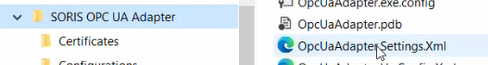
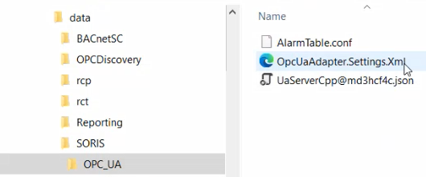
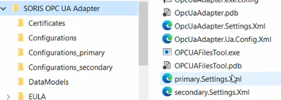

OPC UA Adapter Settings XML Files
After installation, the OpcUaAdapter.Settings.xml file is available at C:\Program Files (x86)\Siemens\SORIS OPC UA Adapter.
If the -serviceName parameter was not set in a BAT installation file, the OpcUaAdapter.Settings.xml file is used. You can edit this file to customize the OPC UA adapter options and browse tree structure.

A backup of this file is available at C:\Data\GMSProjects\[project]\data\SORIS\OPC_UA:

If the -serviceName parameter was set in a BAT installation file, when the OPC UA Client Adapter web client is started for the first time, the corresponding adapter settings file is created and named after the specific adapter instance, based on the configuration included in the OpcUaAdapter.Settings.xml file. You can edit the specific settings file of each adapter instance to customize the specific OPC UA adapter options and browse tree structure.

A backup of each settings file is available at C:\Data\GMSProjects\[project]\data\SORIS\OPC_UA_[adapter service name]:

For details about back and restore, see OPC UA Configuration Backup and Restore.
File sections: